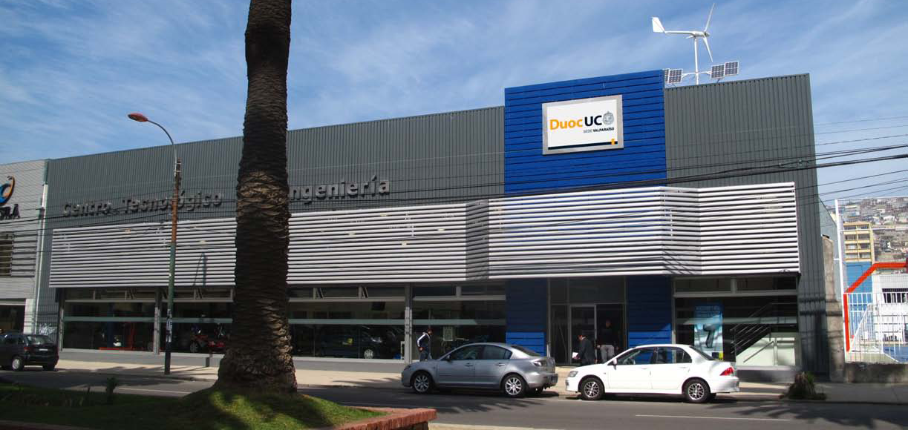

Sedes / Valparaíso



Descripción
Duoc UC ha mantenido a través del tiempo una fructífera y permanente relación con Valparaíso, ciudad portuaria con la cual ha crecido y a la que ha contribuido a desarrollar. La sede local de Duoc UC es reconocida como la institución de educación superior que por dos décadas ha formado buena parte de los técnicos y profesionales medios que operan las diversas empresas de servicio de la zona, en general vinculadas con la actividad del principal puerto marítimo del país. En ella estudian 5.125 alumnos, con la asistencia pedagógica de un experimentado equipo docente compuesto por 161 personas. En total, en la Sede Valparaíso se imparten 21 carreras, correspondientes a las Escuelas de Ingeniería, Construcción, Recursos Naturales, Salud e Informática y Telecomunicaciones. La sede ha diversificado el espectro de su oferta educacional, incursionando, a través de la Escuela de Recursos Naturales, en la formación de Técnicos Veterinarios, Ingenieros y Técnicos Agrícolas. Para este efecto, cuenta con un campus anexo donde funciona el Centro Tecnológico Agrícola, ubicado en la comuna de Quillota. Las instalaciones del centro permiten, a través del trabajo en terreno y la implementación de talleres de tecnología aplicada, formar especialistas en las diversas áreas del quehacer agrícola. P: Presenciales PEV: Programa Ejecutivo Vespertino
Carreras que se imparten
Construcción
Dibujo Arquitectónico y Estructural (Diurno)Ingeniería en Construcción (Diurno/Vespertino)
Ingeniería en Prevención de Riesgos (Diurno/Vespertino)
Restauración Patrimonial (Diurno)
Técnico en Construcción (Diurno/Vespertino)
Técnico en Prevención de Riesgos Pev (Vespertino)
Ingeniería
Ingeniería en Electricidad y Electrónica (Diurno)Ingeniería en Mecánica Automotriz y Autotrónica (Diurno/Vespertino)
Técnico en Electricidad y Electrónica (Diurno/Vespertino)
Técnico en Instrumentación y Automatización Industrial (Diurno/Vespertino)
Técnico en Mantenimiento Industrial (Diurno/Vespertino)
Técnico en Mecánica Automotriz y Autotrónica (Diurno/Vespertino)
Recursos Naturales
Ingeniería Agrícola (Diurno)Ingeniería en Acuicultura (Diurno)
Técnico Agrícola (Diurno)
Técnico Veterinario (Diurno)
Salud
Informática Biomédica (Diurno)Técnico de Enfermería (Diurno/Vespertino)
Técnico de Laboratorio Clínico y Banco de Sangre (Diurno)
Técnico de Radiodiagnóstico y Radioterapia (Diurno)
Técnico en Odontología (Diurno/Vespertino)
Turismo
Administración Hotelera (Diurno/Vespertino)Administración Turística (Diurno)
Dirección en Administración Hotelera (Diurno)
Ecoturismo (Diurno)
Gastronomía (Diurno/Vespertino)
Gastronomía Internacional (Diurno/Vespertino)
Turismo Técnico Mención en Empresas Turísticas (Diurno/Vespertino)